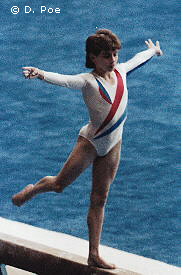

Karine Boucher (FRA)
1988 Moscow News FX Silver Medalist

Karine was born on July 29, 1972, in Orleans. One of eight children, she followed an older sister to the gym and at the age of 12, Karine transferred to Creteil (a sports boarding school). A three-time French champion, she retired from gymnastics after the 1992 Olympics and took up tumbling. She was the 1996 world champion and 1998 European champion in this discipline.
Competition Results
1985
Jr. Avignon International: 5th AA
1986
Antibes International: 4th AA
Belgian Gym Masters: 13th AA
FRA Championships: 1st AA
Jr. European Championships: 10th AA, 6th V, 8th FX
Jr. FRA-ROM Dual Meet: 2nd Team, 6th AA
Rome Grand Prix: 4th AA
1987
Belgian Gym Masters: 10th AA
Chunichi Cup: 17th AA
European Championships: 12th AA
FRA Championships: 1st AA
Tokyo Cup: 5th B, 8th FX
World Championships: 13th Team, 26th AA
1988
American Cup: 6th AA
FRA Championships: 1st AA
Intl. Mixed Pairs: 11th Team
Moscow News International: 10th AA, 2nd FX
Olympic Games: 25th AA
1989
DTB Cup: 8th AA, 5th FX
European Championships: 10th AA
Gander Memorial: 5th AA
Moscow News International: 11th AA, 8th UB
1990
European Championships: 12th AA
French International: 7th AA
Golden Sands International: 9th AA
Moscow News International: 29th AA
1991
American Cup: 4th AA
Intl. Mixed Pairs: 14th AA
Mediterranean Games: 4th AA
World Championships: 11th Team, 20th AA
1992
FRA-HUN Dual Meet: 5th AA
Olympic Games: 8th Team, 62nd AA (prelims)
This page was created on September
16, 2005 and was last updated on November 12, 2006.
© Gymn Forum